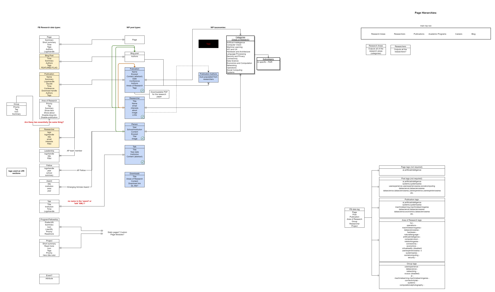

Diagramming examples
Facebook Awards Judging System

A system of data structures underlying a judging system for the 2017 Facebook Awards. The system includes submisstions and the related data objects and the judging process with judges, rounds of judging and the tracking of the results.
Insomniac Artist/Event Database

A data system for Insomniac Artist Database. The system accounts for the complex and changing relationships artists can have with each other and provides for the nested structure of the events that artists take part in.
News Feed API design

The diagram outlines the details of the process of fetching and displaying a News Feed from a proprietary API.
Facebook Reesearch Website
The diagram outlines the information architecture for the FaceBook Research website.